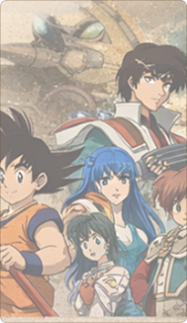

1980s
Anime gains global popularity, introducing new genres and transforming the industry.
- City Hunter
- 1985-1991
Japanese Animation History Archive
Where anime history comes to life—one era at a time.
Anime gains global popularity, introducing new genres and transforming the industry.

A golden era of shounen and shoujo hits that capture worldwide audiences.

A boom period bringing new animation styles and breakout franchises.

Highly polished, diverse series dominate the anime landscape.

Anime flourishes thanks to streaming, new technologies, and darker, mature themes.
Japanese Animation History Archive
A spacefaring mecha series that pioneered variable fighters and romantic drama.
The iconic start of an anime mega-franchise focused on martial arts and adventure.
A darker, more complex sequel that deepened the Gundam universe's lore.

Japanese Animation History Archive
A landmark series that blended mecha action with psychological character study.
A sweeping film epic that pushed anime into mainstream global conversation.
A genre-blending space western known for cinematic direction and music.
Japanese Animation History Archive
An Academy Award-winning film that brought global attention to anime's storytelling power.
A richly plotted fantasy series that blended action, philosophy, and sibling drama.
A tense cat-and-mouse thriller that became a breakout hit worldwide.
Japanese Animation History Archive
A breakout dark fantasy series that helped define the decade's global anime conversation.
A genre-bending magical girl series known for its darker themes and stylish direction.
A blockbuster shounen hit praised for its cinematic action and stunning animation.
Japanese Animation History Archive
A modern shounen milestone known for kinetic battles and cinematic animation.
A noir mystery that spotlighted tight writing and mature, grounded storytelling.
A stylish, neon-drenched series that helped drive global interest in studio collaborations.